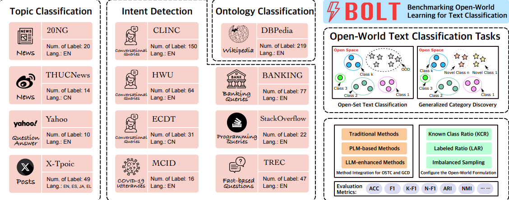

Introduction
Bolt is an experiment runner and benchmarking toolkit for category discovery and open-set evaluation. It provides a YAML-driven grid specification, a method registry with multi-stage pipelines, GPU-aware parallel scheduling, robust OOM retry, and automatic result collection into summary tables.
Bolt organizes experiments around:
Task:
gcd(generalized category discovery) oropenset(open-set / OOD scenarios)Method: a registered pipeline (1 or 2 stages) with a dedicated CLI builder
Dataset: the target dataset identifier
Grid: combinatorial factors such as ratios, folds, seeds, and cluster factor
Get Started
Framework Features
User Guide
Developer Guide